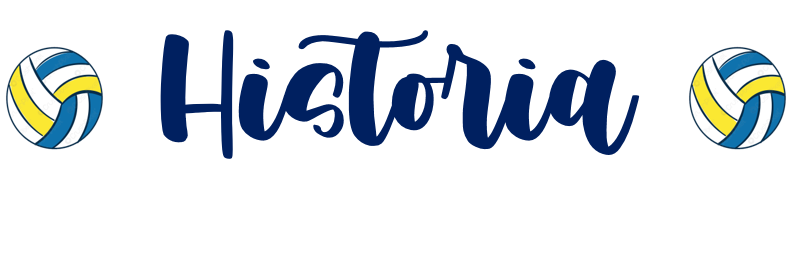
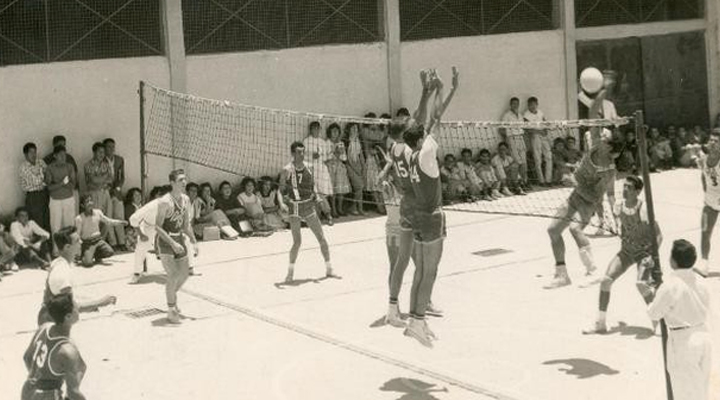
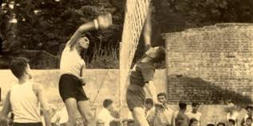

En la década de los 30's a los 40's cuando por primera vez se presenta el voleibol en Guatemala, y jugado exclusivamente por grupos de personas que veían en una recreación, pero no llegó a practicarse como deporte como tal.
En la década de los 40's a los 50's, la presencia de infantería marina de los Estados Unidos le da la popularidad en el medio, jugándose en las bases militares y en las instalaciones del antiguo Club Alemán, actualmente conocido como Campo Universitario los Arcos. Después de la revolución del 44 se incrementó la realización de juegos de voleibol, y la realización de torneos informales; profesores de Educación Física, universitarios y militares intentan organizar en el mes de julio de 1949 la primera Federación, pero los sucesos políticos de la época lo impiden.
El Ing. Augusto Willemssen, es el primero en desempeñar el cargo de presidente, desarrollando una positiva labor, en 1954 tiene que radicarse fuera de Guatemala y lo reemplazan, en su orden, el Ing. Pedro Abascal, el Lic. Enrique Paiz Flores, el Lic. René Méyer del Pozo, el Dr. Baudilio Navarro, el Ing. Hugo Quan Ma. y el Lic. Carlos Posadas Vásquez. El 4 de julio de 1967, surge la FEDEVOLEIBOL, al realizarse en esa fecha la elección de Comité Ejecutivo, y es electo presidente el profesor Gordillo, quien bajo su dirección alcanzó una popularidad enorme este deporte.
En el año 1949 fue fundada la Federación Nacional de Voleibol de Guatemala; en 1950 se realizan en Guatemala los VI Juegos Deportivos Centroamericanos y del Caribe, en los cuales participó el Deporte del Voleibol, sólo en rama masculina, ocupando un tercer puesto, después en México y Cuba. Oficializándose su afiliación a la Federación Internacional de Voleibol (FIVB) en el año 1951, convirtiéndose en uno de los logros más grandes de Guatemala a nivel deportivo.
Sus eventos más importantes: